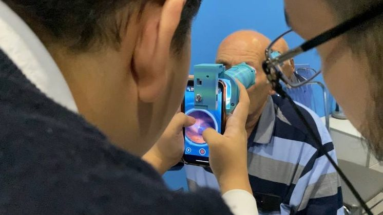
1~5 сек~5 sec
СнимокCapture
Медсестра надевает адаптер на телефон и снимает глазное дно: фото или короткое видео.The nurse clips the adapter on a phone and records the retina: a photo or short video.
Адаптер превращает смартфон в камеру для глазного дна. ИИ за 3 секунды находит признаки ретинопатии, глаукомы и катаракты и говорит, когда пациенту нужен офтальмолог.An adapter turns a smartphone into a retinal camera. In 3 seconds our AI flags retinopathy, glaucoma and cataract and tells you when the patient needs an ophthalmologist.
Награды, акселераторы и клинические партнёрыAwards, accelerators and clinical partners
Ретинопатия и глаукома годами идут без симптомов. Увидеть их можно на снимке глазного дна, но камера для этого стоит 14,4 млн ₸ и есть далеко не в каждой поликлинике. Пациента с диабетом отправляют к офтальмологу, и многие так до него и не доходят.Retinopathy and glaucoma progress silently for years. A retinal photo shows them early, but the camera costs 14.4M ₸ and most clinics don't have one. Diabetic patients get a referral, and many never reach the ophthalmologist.
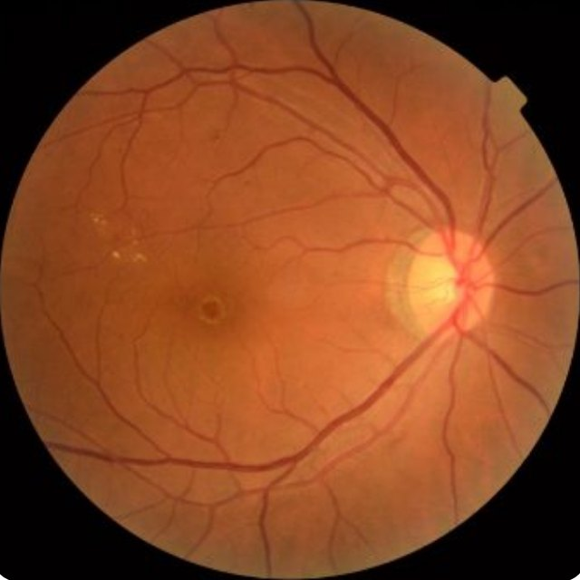
Потяните ползунокDrag the slider
Диабет повреждает сосуды сетчатки. ИИ подсвечивает кровоизлияния и экссудаты и определяет стадию от 1 до 4 по шкале ICDR.Diabetes damages retinal vessels. The AI highlights haemorrhages and exudates and grades the stage from 1 to 4 on the ICDR scale.
Глаукома медленно разрушает зрительный нерв. ИИ смотрит на диск зрительного нерва и показывает подозрение. Диагноз ставит врач после измерения давления и ОКТ.Glaucoma slowly destroys the optic nerve. The AI examines the optic disc and flags a suspicion. A doctor confirms with pressure tests and OCT.
Мутный хрусталик рассеивает свет, и снимок выходит размытым целиком. ИИ видит эту мутность по всему кадру. Подтверждает врач.A cloudy lens scatters light and blurs the whole image. The AI picks up that haze across the frame; a doctor confirms.
Когда изменений нет, карта внимания почти пустая. Пациенту рекомендуют повторить скрининг через год.With no changes, the attention map stays almost empty. The patient is advised to re-screen in a year.
Медсестре не нужен опыт офтальмолога. В тёмной комнате зрачок расширяется сам, без капель.The nurse needs no ophthalmology training. In a dark room the pupil dilates on its own, no drops.

Медсестра надевает адаптер на телефон и снимает глазное дно: фото или короткое видео.The nurse clips the adapter on a phone and records the retina: a photo or short video.
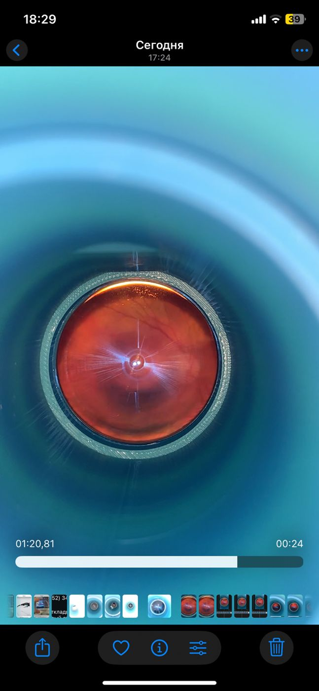
Снимок уходит на платформу. Из видео она сама выбирает самые чёткие кадры, четыре нейросети дают ответ.The image goes to the platform. From video it picks the sharpest frames; four neural networks answer.
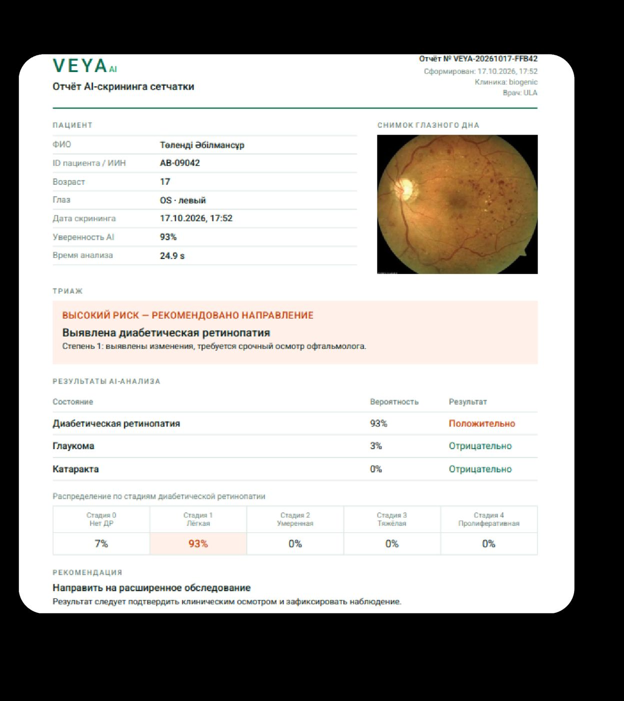
Результат по каждой болезни, тепловая карта и срок визита к врачу. Отчёт на русском, казахском или английском.A result per disease, a heatmap and visit timing. Report in Russian, Kazakh or English.
Не просто «болен» или «здоров». Платформа показывает, где на снимке найдены изменения и как срочно идти к врачу. Если ИИ сомневается, он не угадывает, а отправляет пациента к офтальмологу.Not just "sick" or "healthy". The platform shows where changes were found and how urgently to see a doctor. When the AI is unsure, it doesn't guess; it refers the patient.
Тепловая карта, подозрительные участки, сектор сетчатки и расстояние до макулы.Heatmap, suspicious areas, retinal sector and distance to the macula.
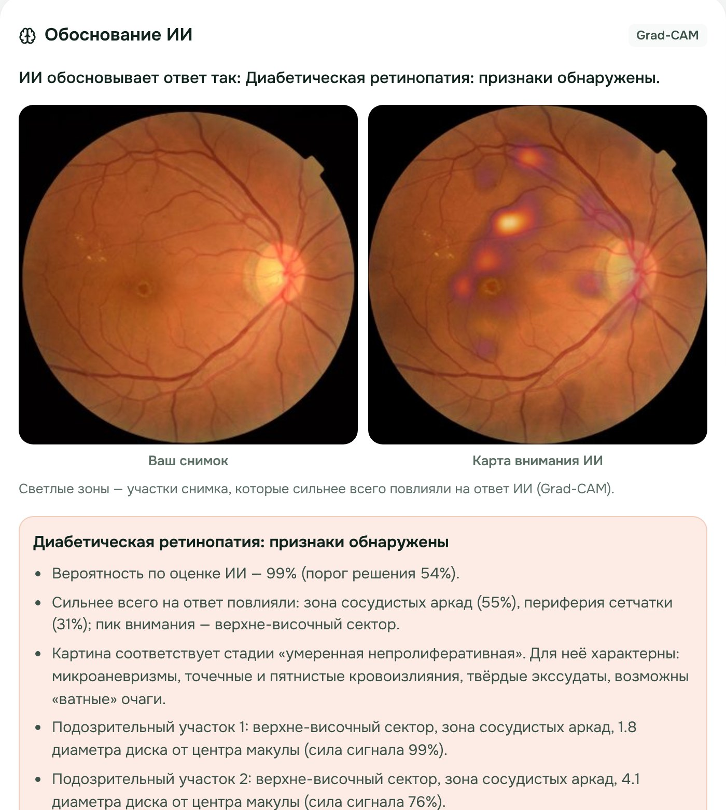
От «к врачу за 24–72 часа» до «повторить через год».From "within 24–72 hours" to "re-screen in a year".
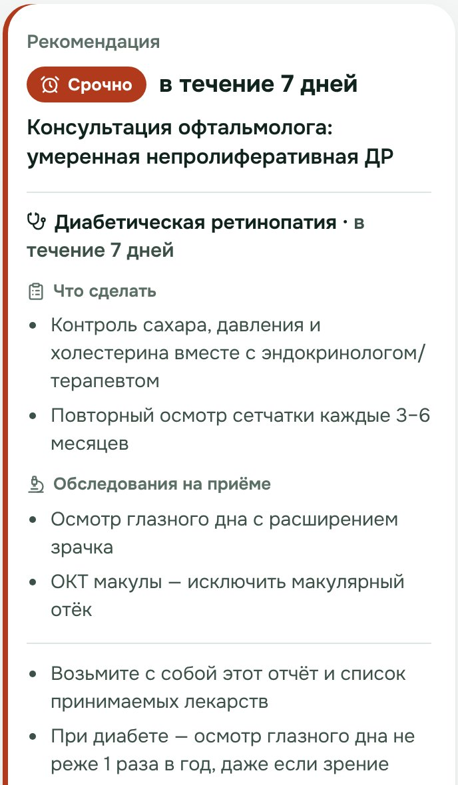
Телефон или ноутбук, ничего не нужно устанавливать.Phone or laptop, nothing to install.
Пациент уходит с отчётом, а не с бумажкой-направлением.The patient leaves with a report, not just a referral slip.
Поиск по имени и ИИН, фильтр «высокий риск», экспорт.Search by name or ID, high-risk filter, export.
Собственная разработка: 3D-печать и оптика. Ставится на телефон, который у клиники уже есть.Designed in-house: 3D-printed body and optics. Mounts on a phone the clinic already owns.
Три модели смотрят на снимок по-разному, четвёртая принимает решение. На карте 14 834 снимка: диагнозов модель не знала, но здоровые глаза, ретинопатия и глаукома сами собрались в отдельные группы.Three models look at the image differently, a fourth makes the call. The map shows 14,834 images: the model never saw the diagnoses, yet healthy eyes, retinopathy and glaucoma formed their own clusters.
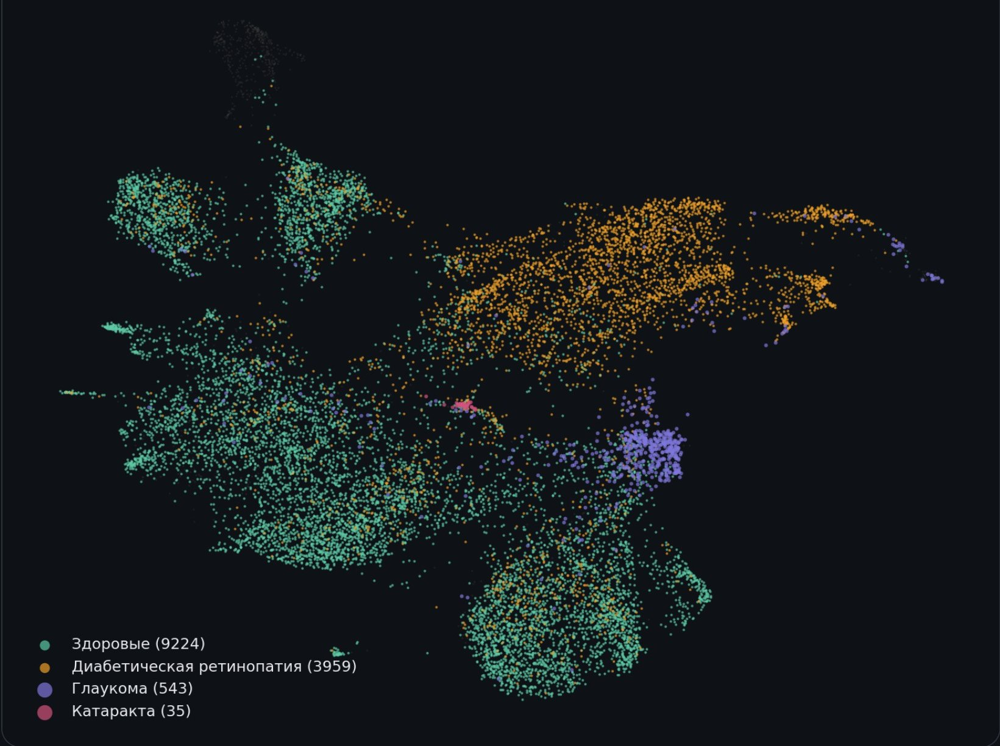
Пациенты из теста не попадали в обучение. Метрики получены на снимках клинических камер. Точность на снимках адаптера измерим в пилоте вместе с офтальмологом.No test patient appeared in training. Metrics come from clinical camera images. We will measure accuracy on adapter images in the pilot with an ophthalmologist.
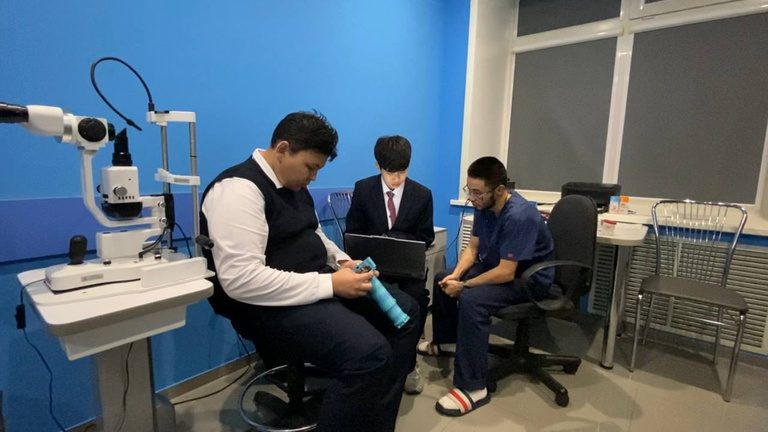
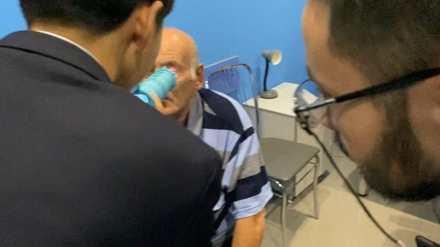
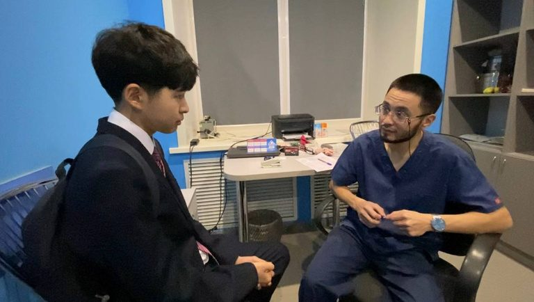
Мы сняли адаптером глазное дно пациента с диабетической ретинопатией в кабинете офтальмолога. Ответ ИИ совпал с оценкой врача.We photographed the retina of a patient with diabetic retinopathy in an ophthalmologist's office. The AI matched the doctor's assessment.
Пациенты теряются между направлением и офтальмологом.Patients get lost between referral and the ophthalmologist.
Адаптер и ИИ отработали на реальном пациенте.Adapter and AI worked on a real patient.
Собираем снимки с адаптера и заключения врачей.Collecting adapter images with doctors' assessments.
Затем регистрация медизделия и другие регионы Казахстана.Then device registration and other regions of Kazakhstan.
Платит клиника, пациент ничего не платит. Частной клинике не нужны госзакупки.The clinic pays; patients pay nothing. Private clinics need no tender.
Разовая покупка, один на кабинет.One-time, one per room.
ИИ-анализ и отчёты без ограничений.Unlimited AI analysis and reports.
Пилоты в клиниках Кокшетау и Акмолинской области.Pilots in clinics across Kokshetau and Akmola region.
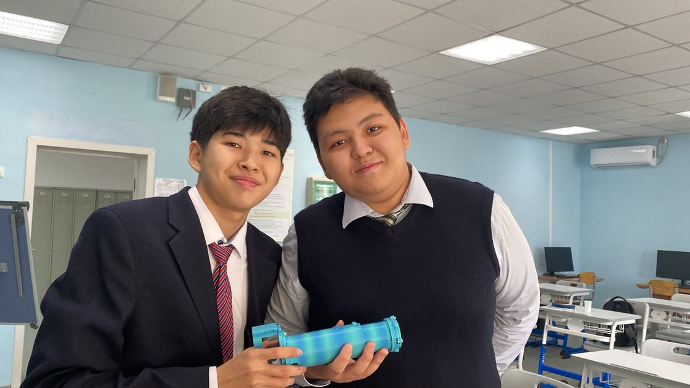
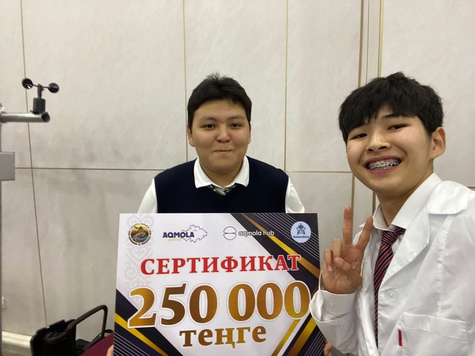
Мы учимся в НИШ ЕМН Кокшетау и сделали Veya вдвоём: адаптер, нейросети, сервер и платформу. У бабушки Улагата катаракта, у сестры Абильмансура глаукома.We study at NIS Kokshetau and built Veya as a team of two: the adapter, the neural networks, the server and the platform. Ulagat's grandmother has cataract and Abilmansur's sister has glaucoma.
Спроектировал оптику и крепление: 3D-модель, расчёт прочности, печать.Designed the optics and clamp: 3D model, strength analysis, printing.
Нет. Veya показывает признаки болезни и срок визита к офтальмологу. Решение принимает врач. Глаукома по снимку означает только подозрение.No. Veya shows signs of disease and when to see an ophthalmologist. The doctor decides. Glaucoma on a photo is only a suspicion.
Обычно нет: в тёмной комнате зрачок расширяется сам. Капли может назначить только врач.Usually not: in a dark room the pupil dilates on its own. Only a doctor may use drops.
С iPhone 13, 14, 15 и 16, включая Pro и Pro Max. Крепление для Android в работе.iPhone 13–16, including Pro and Pro Max. An Android clamp is in progress.
Да, анализ идёт на сервере, около 3 секунд на снимок.Yes, analysis runs on our server, about 3 seconds per image.
Пока нет. Регистрацию в РК начнём после пилотов. Сейчас Veya помогает врачу принять решение.Not yet. Registration in Kazakhstan starts after the pilots. Today Veya supports the doctor's decision.
Модель обучена на открытых обезличенных базах. Снимки пациентов мы используем только с согласия и без личных данных.The model was trained on open, anonymised datasets. We use patient images only with consent and without personal data.
Демо занимает 15 минут: приедем в Кокшетау и по области или покажем онлайн. Инвесторам и врачам тоже сюда.A demo takes 15 minutes, on site in Kokshetau and the region or online. Investors and doctors are welcome too.